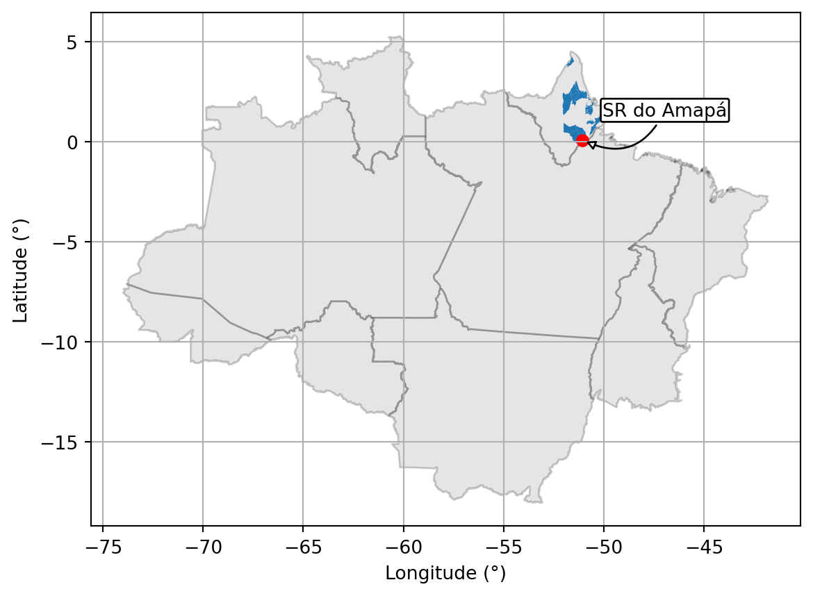
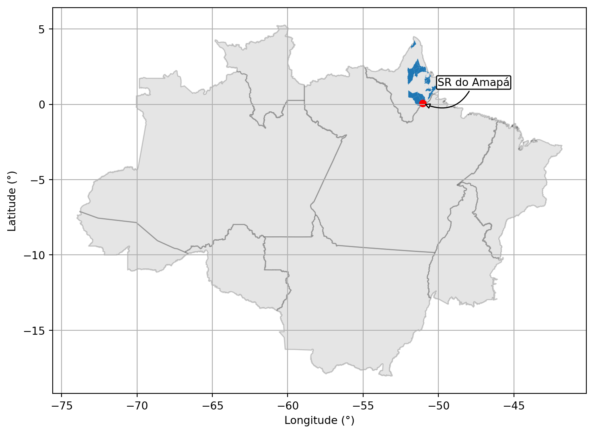
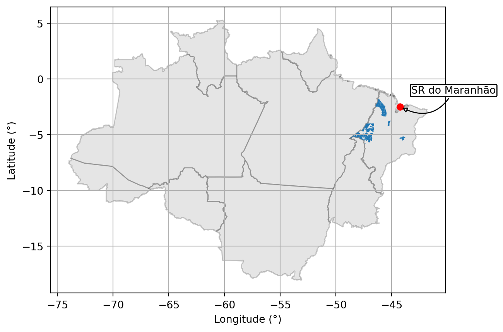
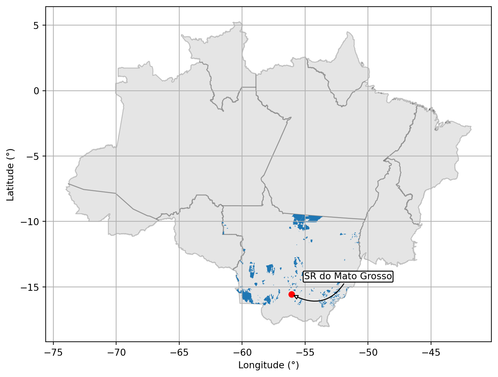
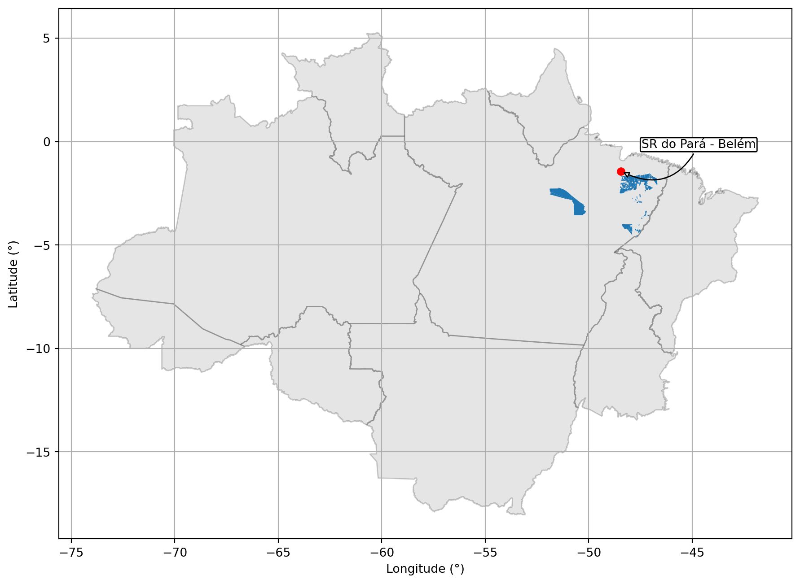
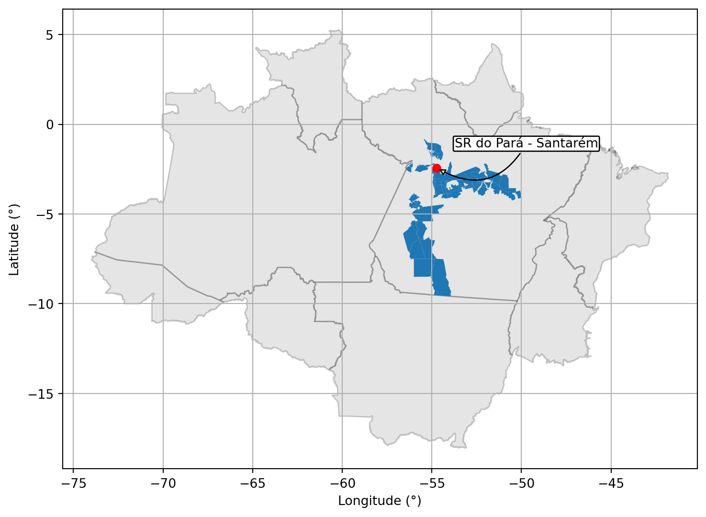
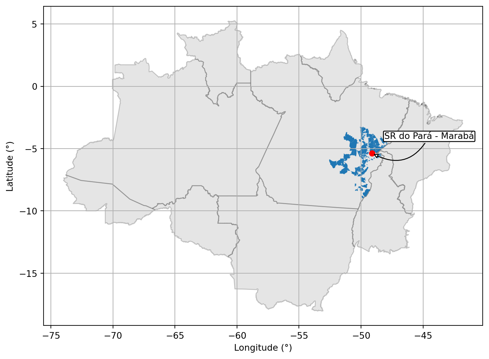
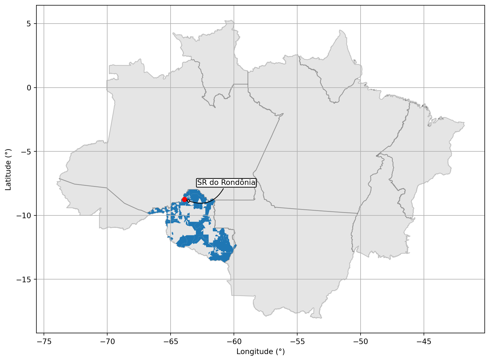
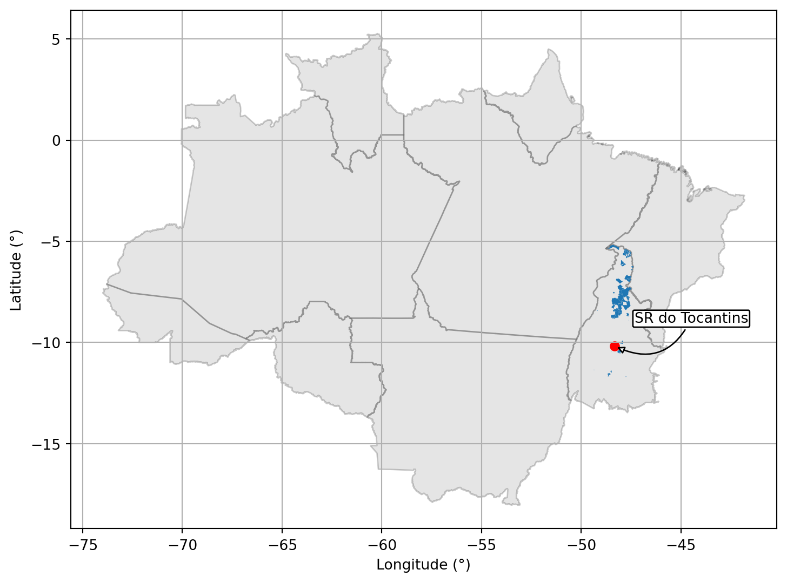
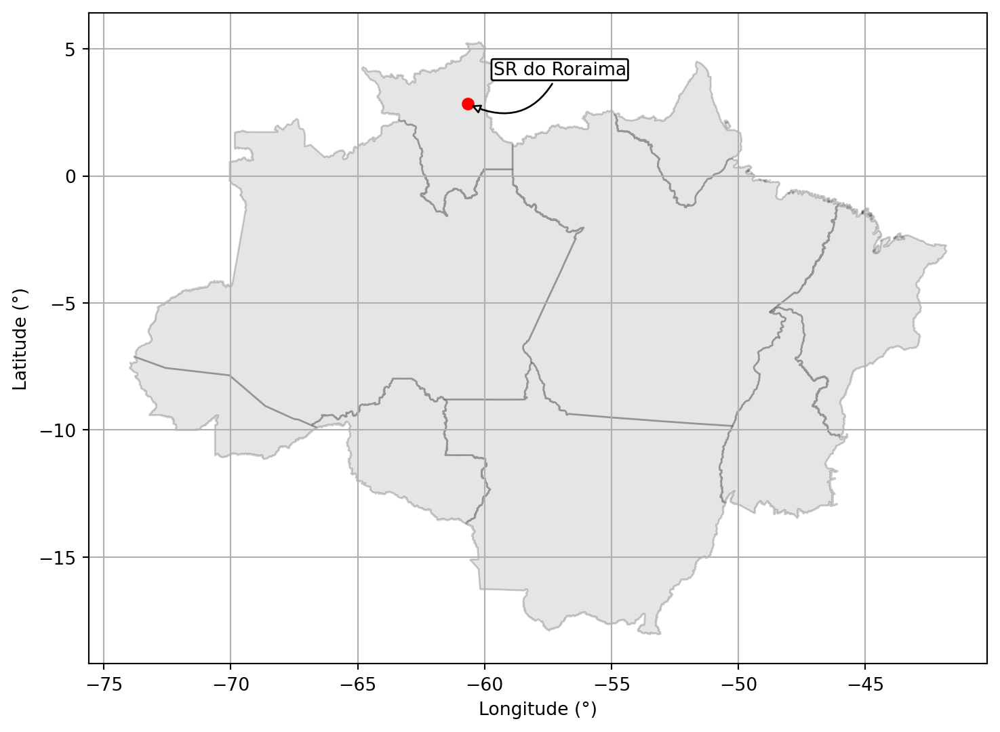

12.1.1 Superintendência Regional do Acre.

12.1.2 Superintendência Regional do Amapá.

12.1.3 Superintendência Regional do Amazonas.

12.1.4 Superintendência Regional do Maranhão.

12.1.5 Superintendência Regional do Mato Grosso.

12.1.6 Superintendência Regional do Pará - Belém.

12.1.7 Superintendência Regional do Pará - Santarém.

12.1.8 Superintendência Regional do Pará - Marabá.

12.1.9 Superintendência Regional do Rondônia.

12.1.10 Superintendência Regional do Tocantins.

12.1.11 Superintendência Regional do Roraima.
/home/obt/miniconda3/lib/python3.9/site-packages/geopandas/plotting.py:693: UserWarning:
The GeoDataFrame you are attempting to plot is empty. Nothing has been displayed.
